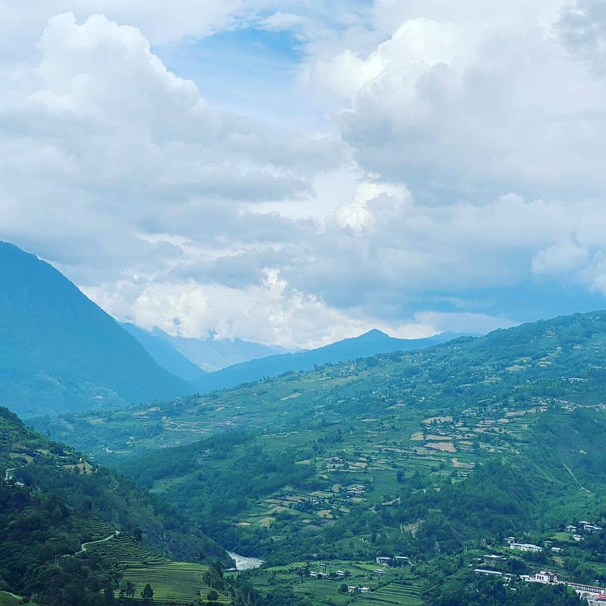

About Me
Hailing from the serene and picturesque village of Radhi under Trashigang Dzongkhag, I carry with me the rich cultural heritage and vibrant spirit of eastern Bhutan. Currently, I am pursuing a Bachelor of Education in Information Technology at the esteemed Samtse College of Education. Driven by a passion for both teaching and technology, I aspire to bridge the gap between tradition and innovation, empowering future generations through digital learning. My journey from the lush rice fields of Radhi to the academic halls of Samtse reflects a deep commitment to personal growth, national development, and the transformative power of education.